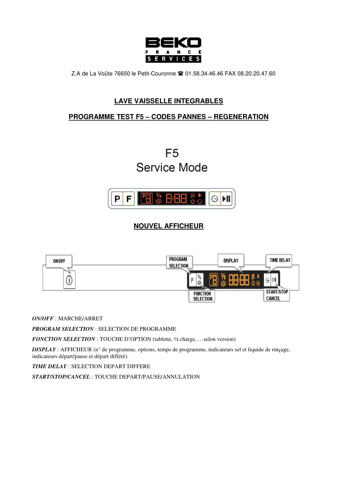
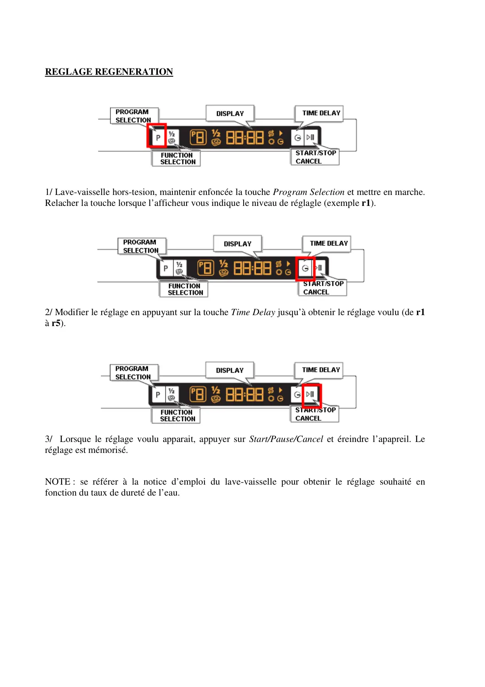
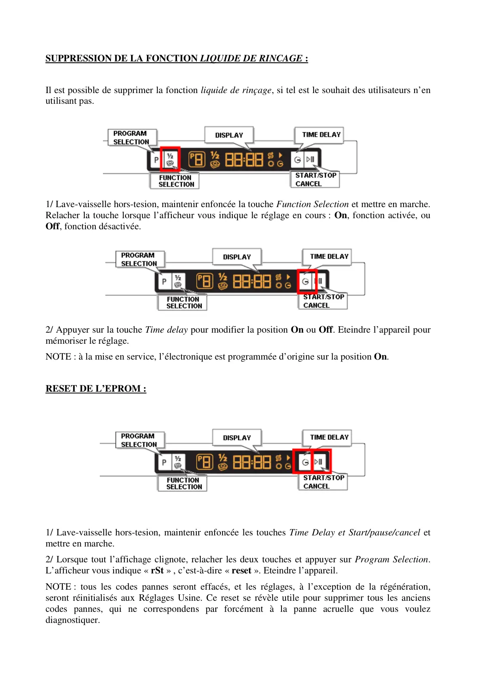
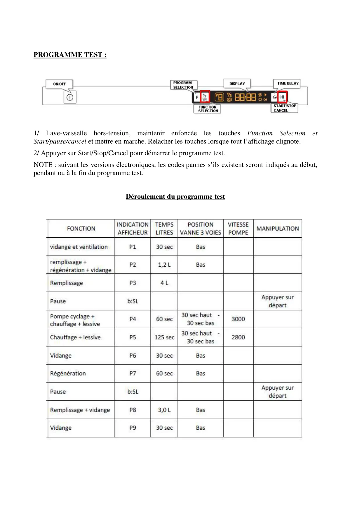
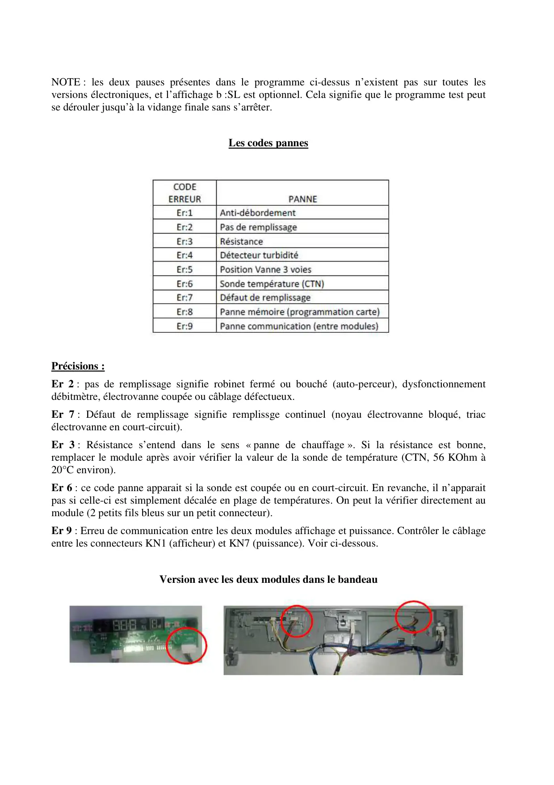
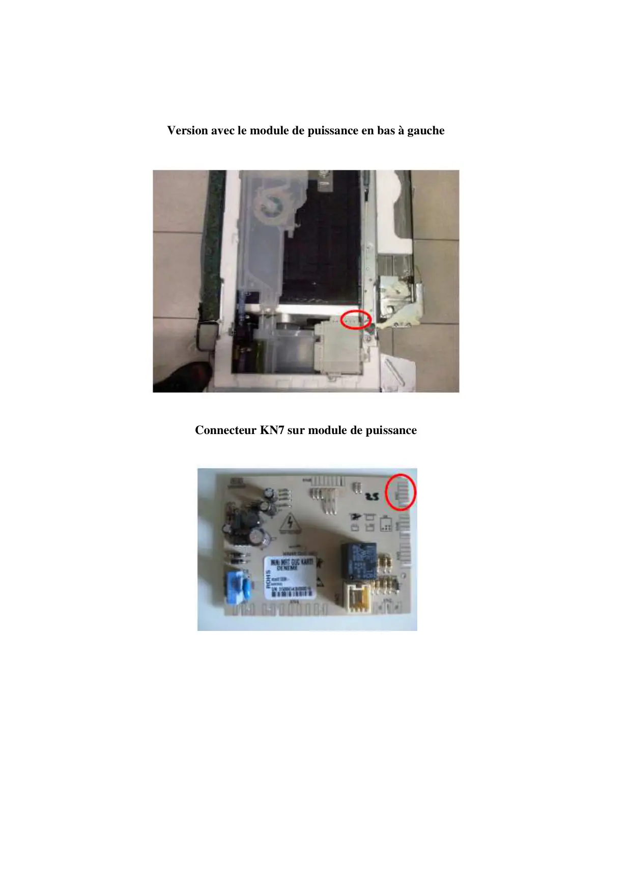

ProgrTest Réglages LVI F5 Fr

Z.A de La Voûte 76650 le Petit-Couronne 01.58.34.46.46 FAX 08.20.20.47.60LAVE VAISSELLE INTEGRABLESPROGRAMME TEST F5 – CODES PANNES – REGENERATIONNOUVEL AFFICHEURON/OFF : MARCHE/ARRETPROGRAM SELECTION : SELECTION DE PROGRAMMEFONCTION SELECTION : TOUCHE D’OPTION (tablette, ½ charge, …selon version)DISPLAY : AFFICHEUR (n° de programme, options, temps de programme, indicateurs sel et liquide de rinçage,indicateurs départ/pause et départ différé).TIME DELAY : SELECTION DEPART DIFFERESTART/STOP/CANCEL : TOUCHE DEPART/PAUSE/ANNULATION
1 / 6
REGLAGE REGENERATION1/ Lave-vaisselle hors-tesion, maintenir enfoncée la touche Program Selection et mettre en marche.Relacher la touche lorsque l’afficheur vous indique le niveau de réglagle (exemple r1).2/ Modifier le réglage en appuyant sur la touche Time Delay jusqu’à obtenir le réglage voulu (de r1à r5).3/ Lorsque le réglage voulu apparait, appuyer sur Start/Pause/Cancel et éreindre l’apapreil. Leréglage est mémorisé.NOTE : se référer à la notice d’emploi du lave-vaisselle pour obtenir le réglage souhaité enfonction du taux de dureté de l’eau.
2 / 6
SUPPRESSION DE LA FONCTION LIQUIDE DE RINCAGE :Il est possible de supprimer la fonction liquide de rinçage, si tel est le souhait des utilisateurs n’enutilisant pas.1/ Lave-vaisselle hors-tesion, maintenir enfoncée la touche Function Selection et mettre en marche.Relacher la touche lorsque l’afficheur vous indique le réglage en cours : On, fonction activée, ouOff, fonction désactivée.2/ Appuyer sur la touche Time delay pour modifier la position On ou Off. Eteindre l’appareil pourmémoriser le réglage.NOTE : à la mise en service, l’électronique est programmée d’origine sur la position On.RESET DE L’EPROM :1/ Lave-vaisselle hors-tesion, maintenir enfoncée les touches Time Delay et Start/pause/cancel etmettre en marche.2/ Lorsque tout l’affichage clignote, relacher les deux touches et appuyer sur Program Selection.L’afficheur vous indique « rSt » , c’est-à-dire « reset ». Eteindre l’appareil.NOTE : tous les codes pannes seront effacés, et les réglages, à l’exception de la régénération,seront réinitialisés aux Réglages Usine. Ce reset se révèle utile pour supprimer tous les ancienscodes pannes, qui ne correspondens par forcément à la panne acruelle que vous voulezdiagnostiquer.
3 / 6
PROGRAMME TEST :1/ Lave-vaisselle hors-tension, maintenir enfoncée les touches Function Selection etStart/pause/cancel et mettre en marche. Relacher les touches lorsque tout l’affichage clignote.2/ Appuyer sur Start/Stop/Cancel pour démarrer le programme test.NOTE : suivant les versions électroniques, les codes pannes s’ils existent seront indiqués au début,pendant ou à la fin du programme test.Déroulement du programme test
4 / 6
NOTE : les deux pauses présentes dans le programme ci-dessus n’existent pas sur toutes lesversions électroniques, et l’affichage b :SL est optionnel. Cela signifie que le programme test peutse dérouler jusqu’à la vidange finale sans s’arrêter.Les codes pannesPrécisions :Er 2 : pas de remplissage signifie robinet fermé ou bouché (auto-perceur), dysfonctionnementdébitmètre, électrovanne coupée ou câblage défectueux.Er 7 : Défaut de remplissage signifie remplissge continuel (noyau électrovanne bloqué, triacélectrovanne en court-circuit).Er 3 : Résistance s’entend dans le sens « panne de chauffage ». Si la résistance est bonne,remplacer le module après avoir vérifier la valeur de la sonde de température (CTN, 56 KOhm à20°C environ).Er 6 : ce code panne apparait si la sonde est coupée ou en court-circuit. En revanche, il n’apparaitpas si celle-ci est simplement décalée en plage de températures. On peut la vérifier directement aumodule (2 petits fils bleus sur un petit connecteur).Er 9 : Erreu de communication entre les deux modules affichage et puissance. Contrôler le câblageentre les connecteurs KN1 (afficheur) et KN7 (puissance). Voir ci-dessous.Version avec les deux modules dans le bandeau
5 / 6
Version avec le module de puissance en bas à gaucheConnecteur KN7 sur module de puissance
6 / 6